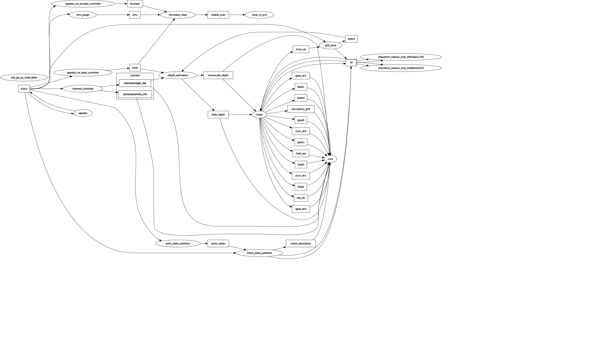

This is a snapshot of what the ROS network looks like during runtime with all the subscribers and publishers. Although these are all scattered for organization throughout the project files such as being in the RRT or Occupancy Field files, they are all linked back to the main file which is why they are all seen flowing through main.py.